La prueba F del análisis de varianza descansa en cuatro supuestos sobre el error experimental. El Bloque 4 ajusta el modelo del diseño, revisa esos supuestos en los residuales, resume el diagnóstico en una calificación de A a D, compara nueve transformaciones con el perfil de Box–Cox y, cuando nada funciona o la respuesta es una calificación, ofrece los análisis de rangos que corresponden al diseño.
El modelo de un ensayo en bloques es y = μ + tratamiento + bloque + ε. Los supuestos del ANOVA no hablan del rendimiento, hablan de ε, el error experimental. Por eso se revisan en los residuales del modelo ajustado, lo que queda de cada parcela después de quitarle la media de su tratamiento y el efecto de su bloque, y nunca en la respuesta cruda.
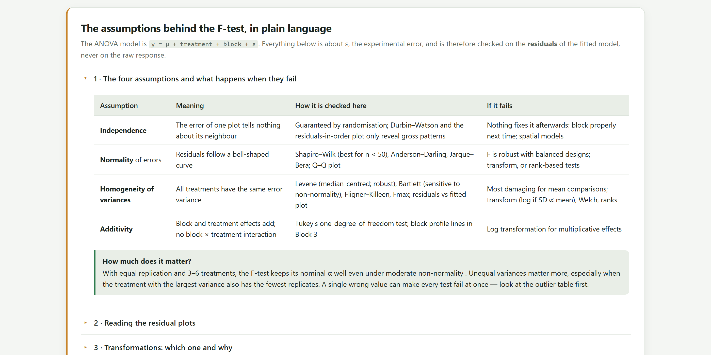
En el ejemplo de maíz, el rendimiento de las 16 parcelas tiene dos jorobas (figura 4.8): una para el testigo y otra para las dosis altas. Una prueba de normalidad aplicada a esos datos crudos podría rechazar la normalidad, y sin embargo no hay ningún problema: las jorobas son el efecto del nitrógeno, que es justo lo que se quiere estudiar. Los residuales quitan ese efecto y el de los bloques; lo que queda es la variación entre parcelas tratadas igual, y esa sí debe parecerse a una campana, tener la misma dispersión en todos los tratamientos y no depender del bloque. El Bloque 4 ajusta el modelo del diseño antes de probar nada.
| Supuesto | Significa | Cómo lo revisa la app | Si falla |
|---|---|---|---|
| Independencia | El error de una parcela no dice nada del de su vecina. | Lo garantiza la aleatorización. Durbin–Watson y el gráfico de residuales en orden solo revelan patrones gruesos. | Nada lo arregla después: bloquear bien en el siguiente ensayo, o modelos espaciales. |
| Normalidad del error | Los residuales siguen una campana. | Shapiro–Wilk (la mejor con menos de 50 datos), Anderson–Darling y Jarque–Bera; gráfico Q–Q. | La F es robusta con diseños balanceados. Transformar, o usar pruebas de rangos. |
| Homogeneidad de varianzas | Todos los tratamientos tienen la misma varianza del error. | Levene centrada en la mediana (robusta), Bartlett (sensible a la no normalidad), Fligner–Killeen y Fmax; residuales contra valores ajustados. | Es lo que más daña las comparaciones de medias. Transformar (logaritmo si la DE crece con la media), Welch o rangos. |
| Aditividad | Los efectos de bloque y tratamiento se suman; no hay interacción bloque × tratamiento. | Prueba de un grado de libertad de Tukey; perfiles por bloque del Bloque 3. | Logaritmo, si los efectos son multiplicativos. |
La tarjeta 1 · Model and residual diagnostics se calcula sola al abrir el bloque y se repite con Run diagnostics al cambiar la respuesta, el nivel de significancia o las interacciones. Arriba de los resultados, la app muestra el modelo exacto que ajustó.
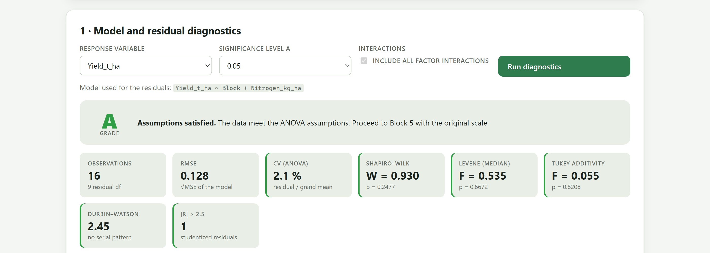
1 2 3 4 5 6Yield_t_ha ~ Block + Nitrogen_kg_ha, el diseño de bloques completos al azar.| Grado | Cuándo | Qué hacer |
|---|---|---|
| A | Todas las comprobaciones en verde. | Pasar al Bloque 5 con la escala original. |
| B | Un aviso ámbar. | El ANOVA es aceptable. Menciona la revisión en los métodos; si el aviso es de varianzas, cuidado con las comparaciones de medias. |
| C | Una comprobación en rojo, o dos avisos ámbar. | Compara las transformaciones o usa la ruta no paramétrica, y reporta cuál elegiste y por qué. |
| D | Dos o más comprobaciones en rojo. | Una transformación difícilmente lo arregla todo: los procedimientos de rangos son la opción segura, o un modelo lineal generalizado para conteos y proporciones. |
Cada prueba se colorea según su valor P: verde si P ≥ α, ámbar si α/5 ≤ P < α (entre 0.01 y 0.05 con α = 0.05) y rojo si P < α/5.
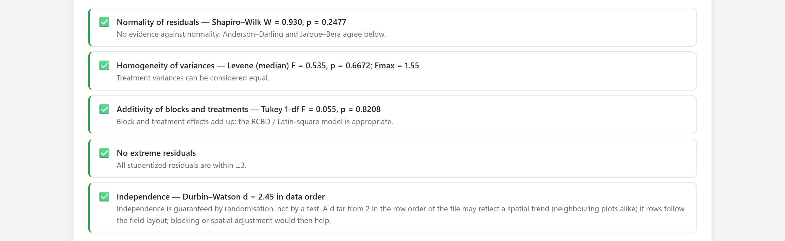
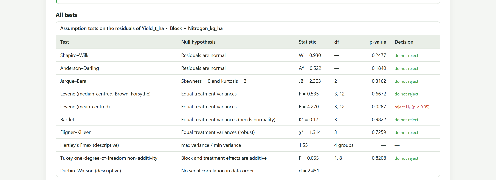
| Prueba | Qué prueba y cuándo confiar en ella |
|---|---|
| Shapiro–Wilk | Normalidad de los residuales. La más potente con muestras pequeñas; es la que decide la comprobación. |
| Anderson–Darling | Normalidad, con más peso en las colas. |
| Jarque–Bera | Normalidad a partir de la asimetría y la curtosis. Poco potente con menos de 30 datos. |
| Levene centrada en la mediana | Igualdad de varianzas entre tratamientos. Robusta a la no normalidad; es la que decide la comprobación. |
| Levene centrada en la media | La versión clásica. Con pocas repeticiones por tratamiento es demasiado sensible y rechaza con facilidad. |
| Bartlett | Igualdad de varianzas, muy potente si los datos son normales y engañosa si no lo son. |
| Fligner–Killeen | Igualdad de varianzas con rangos; la más robusta. |
| Fmax de Hartley | Cociente entre la mayor y la menor varianza de los tratamientos. Descriptiva: por encima de 10 hay un problema serio. |
| No aditividad de Tukey | Interacción bloque × tratamiento de tipo multiplicativo, con un grado de libertad. Solo aparece si hay bloques o filas y columnas. |
| Durbin–Watson | Correlación entre residuales consecutivos en el orden del archivo. Cerca de 2, sin patrón; solo tiene sentido si las filas siguen el acomodo del campo. |
En el maíz, la Levene centrada en la media rechaza la igualdad de varianzas (F = 4.270, P = 0.0287) mientras la centrada en la mediana, Bartlett y Fligner–Killeen no lo hacen, y el Fmax es apenas 1.55. Con cuatro parcelas por dosis, la media de cada grupo se mueve mucho con un solo valor y la versión clásica se vuelve nerviosa. La app decide con la versión robusta; la tabla muestra las demás para que el lector de tu artículo no tenga que preguntar. Cuando las pruebas discrepan, el gráfico de residuales contra ajustados y el Fmax desempatan.
La tabla Suspicious observations lista las parcelas con residual estudentizado mayor que 2.5 en valor absoluto: el número de fila en el archivo (contando el encabezado), su tratamiento y bloque, el valor observado, el ajustado, el residual, el residual estudentizado y el apalancamiento.
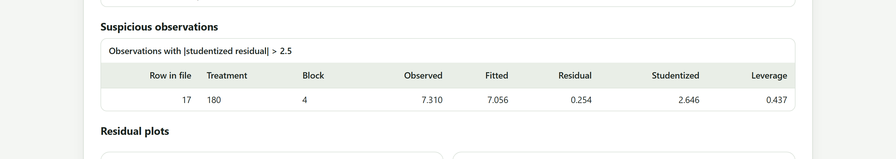
| Si en la libreta encuentras… | entonces… |
|---|---|
| un error de captura (un punto decimal corrido, dos dígitos invertidos) | Corrige el dato en el archivo y vuelve a cargar. |
| una parcela dañada por animales, inundación o falla de riego, documentada | Declárala faltante (celda vacía) y dilo en los métodos. |
| nada anormal | El dato se queda. Si influye mucho, analiza con y sin él y reporta ambos. |
Nunca se borra un valor solo porque estorba. Un residual grande sin explicación es información sobre el ensayo, no un error.
Las pruebas dan un sí o un no; los gráficos dicen por qué. La app dibuja seis, en dos columnas, todos editables y descargables. Los puntos más alejados llevan el número de fila del archivo.
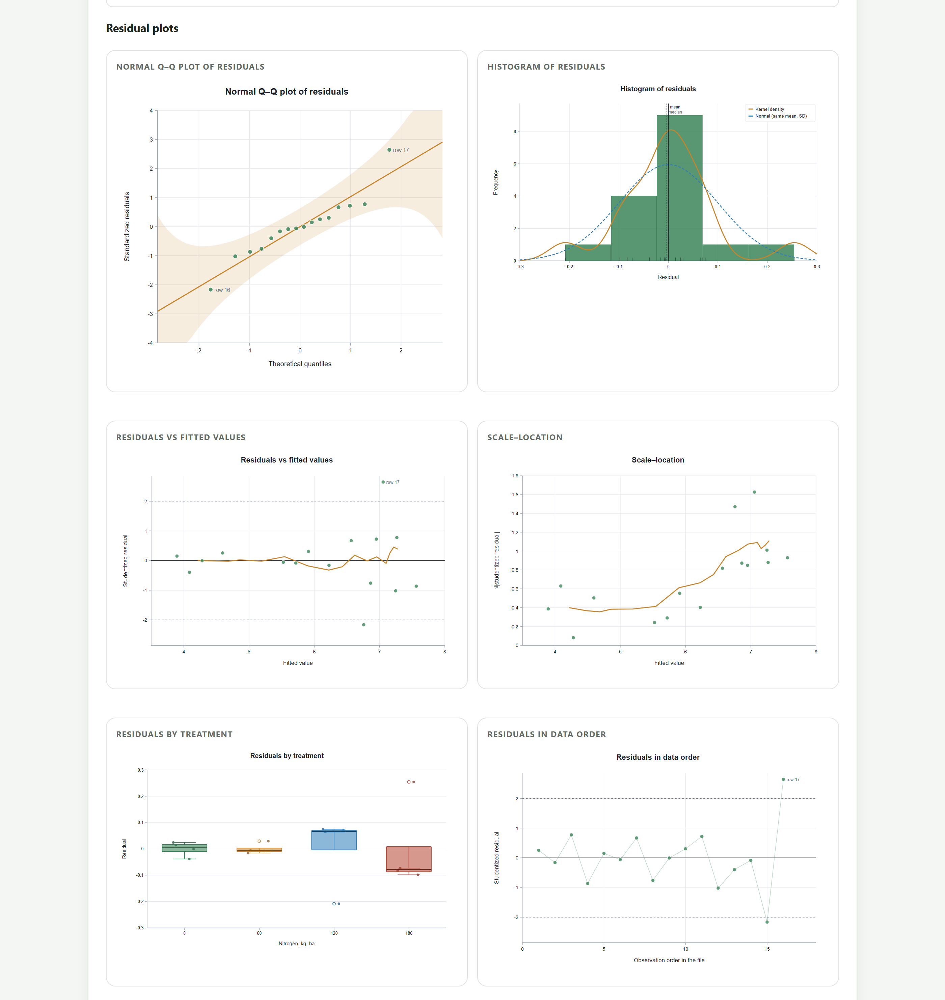
| Gráfico | Lo normal | Señales de alarma |
|---|---|---|
| Q–Q normal | Los puntos siguen la recta y quedan dentro de la banda sombreada (envolvente al 95 %). | Forma de S: colas pesadas o ligeras. Curva: asimetría. Uno o dos puntos lejos: valores atípicos. Algunos puntos fuera de la banda son esperables. |
| Histograma | Una campana centrada en cero. | Cola larga hacia un lado; dos jorobas en los residuales (a diferencia de los datos crudos, aquí sí es problema). |
| Residuales contra ajustados | Una nube sin forma alrededor de cero, casi toda entre −2 y 2. | Embudo que se abre hacia la derecha: la varianza crece con la media, pide logaritmo o raíz. Curva: falta un término (un efecto cuadrático de la dosis) o no aditividad. |
| Escala–localización | La línea suavizada casi horizontal. | Una tendencia creciente confirma la heterogeneidad de varianzas. |
| Residuales por tratamiento | Cajas de altura parecida. | Cajas de altura muy distinta: varianzas desiguales entre tratamientos. |
| Residuales en orden | Subidas y bajadas sin patrón. | Rachas de positivos y luego de negativos: una tendencia a lo largo del campo, si las filas del archivo siguen el orden de siembra. |
Los puntos del Q–Q siguen la recta, con las filas 16 y 17 en los extremos pero dentro de la banda. En residuales contra ajustados la nube es plana y solo la fila 17 pasa de 2. La escala–localización sube un poco en las dosis altas, pero con 16 parcelas y un Levene de P = 0.67 no hay nada que corregir. Las cajas por tratamiento tienen alturas parecidas. Un ensayo limpio.
La tarjeta 2 · Would a transformation help? aplica cada transformación posible a la respuesta, vuelve a ajustar el mismo modelo y repite las pruebas. Una recomendación en la parte superior resume el resultado. El botón Use de cada fila crea una columna nueva con la respuesta transformada, sin tocar la original, y repite el diagnóstico sobre ella.
| Transformación | Situación típica | Notas |
|---|---|---|
| ln(y), log₁₀(y) | La DE crece en proporción a la media; efectos multiplicativos; CV constante entre tratamientos. | Las medias destransformadas son medias geométricas. |
| ln(y + 1) | Conteos con ceros. | Solo tiene sentido si hay ceros. |
| √y, √(y + 0.5) | Conteos (insectos, malezas, colonias): varianza parecida a la media. La segunda, con conteos pequeños y ceros. | Un modelo lineal generalizado de Poisson es la alternativa moderna. |
| Arcoseno √(y/100) | Porcentajes que vienen de conteos: germinación, incidencia, mortalidad. | Solo hace falta con valores por debajo de 20 % o por encima de 80 %. No para porcentajes de cantidades continuas, como la humedad. |
| Logit | Proporciones lejos de 0 y de 1. | O un modelo binomial. |
| 1/y | Tasas y tiempos hasta un evento; la DE crece con el cuadrado de la media. | Rara vez hace falta en agronomía. |
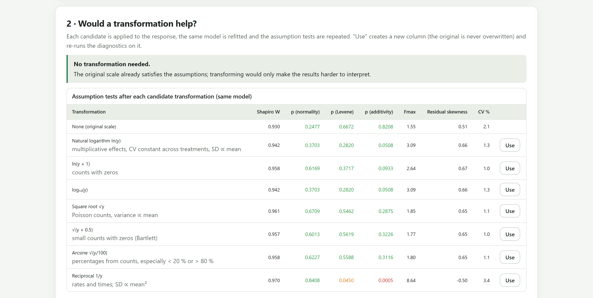
El ejemplo de jitomate (tres variedades × tres niveles de fertilización en bloques) es el caso contrario. Los residuales son normales y las varianzas homogéneas, pero la prueba de aditividad de Tukey rechaza con fuerza: F = 54.251, P < 0.0001. La calificación es C.
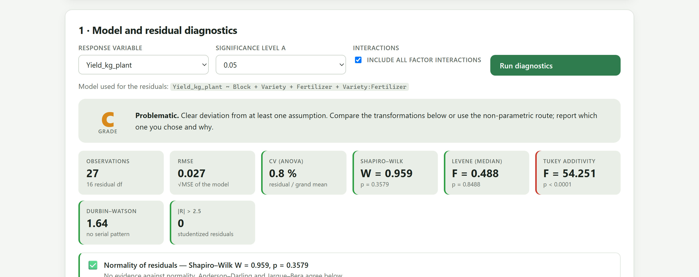
En un modelo aditivo, un bloque fértil suma lo mismo a todas las variedades: 0.3 kg más por planta a Cherry y 0.3 kg más a Saladette. En muchos cultivos no ocurre así: el bloque fértil rinde un 10 % más, lo que son 0.2 kg en Cherry y 0.4 kg en Saladette. El efecto es multiplicativo y aparece como interacción bloque × tratamiento. El logaritmo convierte los productos en sumas, ln(a · b) = ln a + ln b, y devuelve el modelo aditivo.
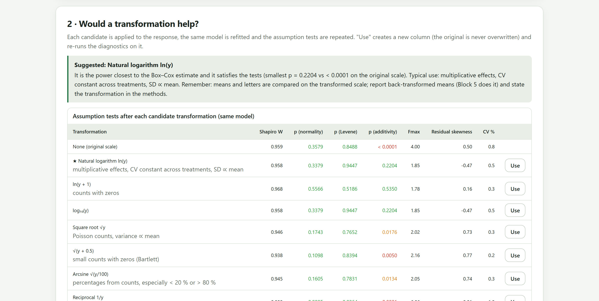
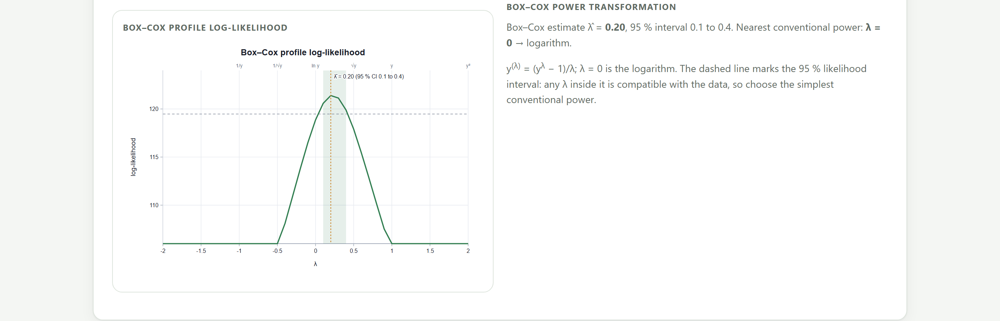
Box–Cox reúne las transformaciones de potencia en una sola fórmula, y(λ) = (yλ − 1)/λ, donde λ = 1 deja los datos como están, λ = 0.5 es la raíz cuadrada, λ = 0 el logaritmo y λ = −1 el recíproco. La app calcula, para cada λ entre −2 y 2, qué tan verosímil es el modelo del diseño con la respuesta transformada, y marca con una línea punteada el intervalo al 95 %. Cualquier λ dentro del intervalo es compatible con los datos, así que se elige la potencia convencional más sencilla que caiga dentro: nadie reporta «λ = 0.2», se reporta «logaritmo».
Yield_kg_plant_ln), la elige como respuesta y repite el diagnóstico.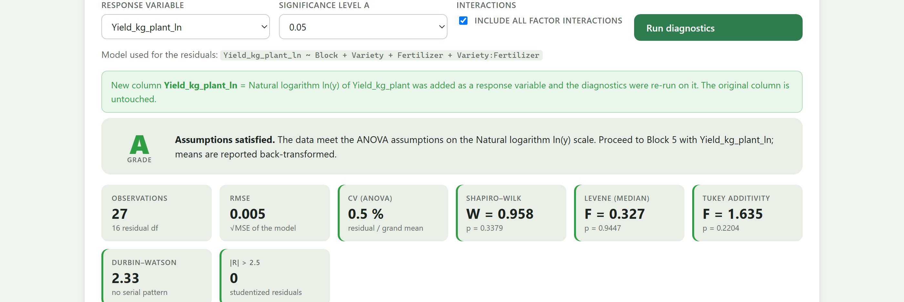
Yield_kg_plant_ln aparece como respuesta, el mensaje verde confirma que la original no se tocó y la calificación sube a A. La app avisa que en el Bloque 5 las medias se reportarán destransformadas.Para cada transformación, la app toma el menor de los tres valores P (normalidad, Levene y aditividad). Si la potencia convencional más cercana a Box–Cox ya tiene ese mínimo por encima de α, la sugiere. Si no, sugiere la transformación con el mínimo más alto. Solo hay sugerencia cuando la escala original falla y la candidata pasa; si ninguna pasa, la tarjeta lo dice y remite a la ruta no paramétrica. En el jitomate, ln(y + 1) tiene valores P aún mayores que ln(y), pero sumar 1 a rendimientos sin ceros no tiene justificación: se prefiere el logaritmo que respalda Box–Cox.
Los procedimientos de rangos sustituyen cada observación por su posición en la muestra ordenada y ya no necesitan normalidad. Son la elección natural para calificaciones ordinales, muestras pequeñas con valores atípicos y mediciones muy asimétricas que ninguna transformación endereza. La tarjeta 3 · Non-parametric analysis muestra solo los procedimientos que corresponden a la estructura del diseño.
| Procedimiento | Aparece con… | Análogo paramétrico | Comparaciones y letras |
|---|---|---|---|
| Kruskal–Wallis | Un factor, sin bloques | ANOVA de azar completo | Dunn (z sobre rangos medios), o Mann–Whitney por pares en una segunda variante. |
| Welch | Un factor, sin bloques | ANOVA de un factor | Games–Howell. Para datos normales con varianzas desiguales. |
| Friedman | Un factor en bloques completos, una parcela por bloque y tratamiento | Bloques completos al azar | Conover (t sobre sumas de rangos) o Nemenyi (rango estudentizado). |
| Scheirer–Ray–Hare | Dos factores, sin bloques | ANOVA de dos vías | Sin comparaciones por pares. |
| Transformación de rangos alineados (ART) | Siempre: cualquier diseño factorial o con bloques | ANOVA factorial completo | Tukey sobre los rangos alineados del primer factor, si su efecto es significativo. |
| Ejemplo | Procedimientos disponibles |
|---|---|
| CRD · bean varieties | Kruskal–Wallis, Welch, ART, Kruskal–Wallis con Mann–Whitney |
| RCBD · maize × nitrogen y Ordinal scores · fungicides | Friedman, ART |
| Latin square · wheat, Factorial 3×3 in RCBD · tomato, Split-plot · irrigation × variety | ART |
Además del procedimiento, se elige el ajuste de los valores P para las comparaciones múltiples: Holm (predeterminado), Bonferroni, Benjamini–Hochberg, Hochberg o ninguno; y, con Friedman, entre Conover y Nemenyi. Run produce tres tablas (la prueba, las comparaciones por pares y los grupos con letras) y una figura de medianas con letras.
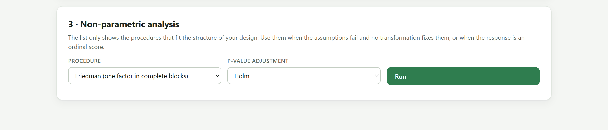
El ejemplo de fungicidas mide la severidad de una enfermedad en una escala de 1 a 9, en cuatro tratamientos y cinco bloques. Curiosamente, sus residuales pasan las pruebas paramétricas (calificación A, Shapiro–Wilk P = 0.0552). Eso no cambia la naturaleza de los datos: una escala ordinal no tiene distancias iguales entre sus categorías (pasar de 2 a 3 no es lo mismo que pasar de 8 a 9), y la media de calificaciones es una cifra de interpretación dudosa. La ruta de rangos es la correcta.
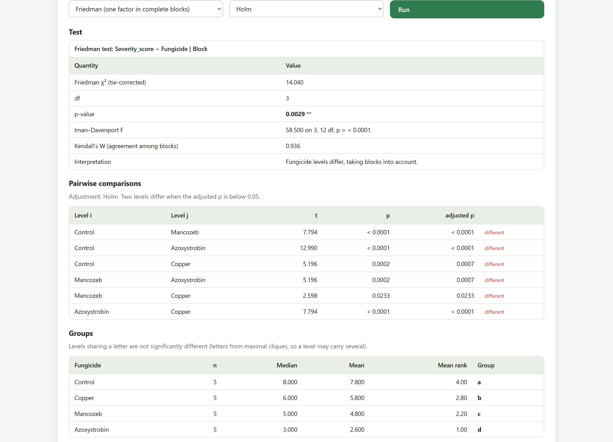
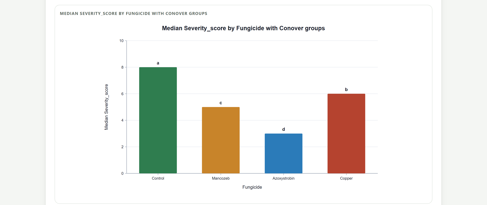
| Cantidad | Lectura |
|---|---|
| χ² de Friedman | La prueba global, con corrección por empates. Sus grados de libertad son tratamientos − 1. |
| F de Iman–Davenport | Una versión de la misma prueba que se aproxima mejor con pocos bloques. Si ambas discrepan, cree en esta. |
| W de Kendall | De 0 a 1: el acuerdo de los bloques en el orden de los tratamientos. Es el tamaño del efecto. |
| Rango medio | El puesto promedio de cada tratamiento dentro de los bloques: 4 es el más alto en todos, 1 el más bajo en todos. |
| Letras | Se leen como las de las pruebas de medias: dos tratamientos que comparten letra no difieren. |
Con el frijol en azar completo, Kruskal–Wallis da H = 17.629 con 4 grados de libertad (P = 0.0015) y un ε² de 0.909; Dunn con Holm separa, por ejemplo, Negro Jamapa de Azufrado. Con el jitomate, el ART confirma los efectos de bloque, variedad, fertilización y su interacción (todos P < 0.0001), y Tukey sobre los rangos alineados ordena las variedades: Saladette (a), Rio Grande (b) y Cherry (c). En el ART, la columna aligned sum debe valer cero en todas las filas; es un control interno de que la alineación se hizo bien.
| Si… | entonces… |
|---|---|
| la calificación es A o B y la respuesta es continua | ANOVA en la escala original (Bloque 5). |
| la calificación es C o D y una transformación convencional sube a A o B | ANOVA con la respuesta transformada y medias destransformadas. |
| ninguna transformación basta | Ruta no paramétrica del diseño, o un modelo lineal generalizado para conteos y proporciones. |
| la respuesta es una calificación ordinal (1 a 5, 1 a 9) | Ruta no paramétrica, pase lo que pase con los supuestos. |
| los datos son normales pero las varianzas muy desiguales, en un solo factor sin bloques | Welch con Games–Howell. |
Las pruebas de rangos pierden poca potencia cuando los datos son normales (cerca del 5 % para Kruskal–Wallis frente a la F) y pueden ganar mucha cuando no lo son.
Yield_t_ha ~ Block + Nitrogen_kg_ha.Yield_kg_plant_ln (figura 5.11).Yield_kg_plant_ln como respuesta; las medias saldrán también destransformadas.Los supuestos se juzgan con varias piezas a la vez: las pruebas, los gráficos y lo que sabes de la variable. Una prueba en rojo pide mirar el gráfico que le corresponde antes de decidir. Una transformación se elige por lo que dicen los residuales y Box–Cox, no por el resultado del ANOVA, y se reporta. Y cuando la respuesta es ordinal, el análisis de rangos es el correcto aunque los supuestos parezcan cumplirse.
Con los supuestos resueltos, el siguiente paso es el análisis de varianza. El capítulo del Bloque 5 presenta el catálogo de diseños y sus estratos de error, las opciones de sumas de cuadrados y pruebas de medias, la lectura de la tabla de ANOVA, las medias ajustadas con letras, los efectos simples en factoriales y las curvas de respuesta.